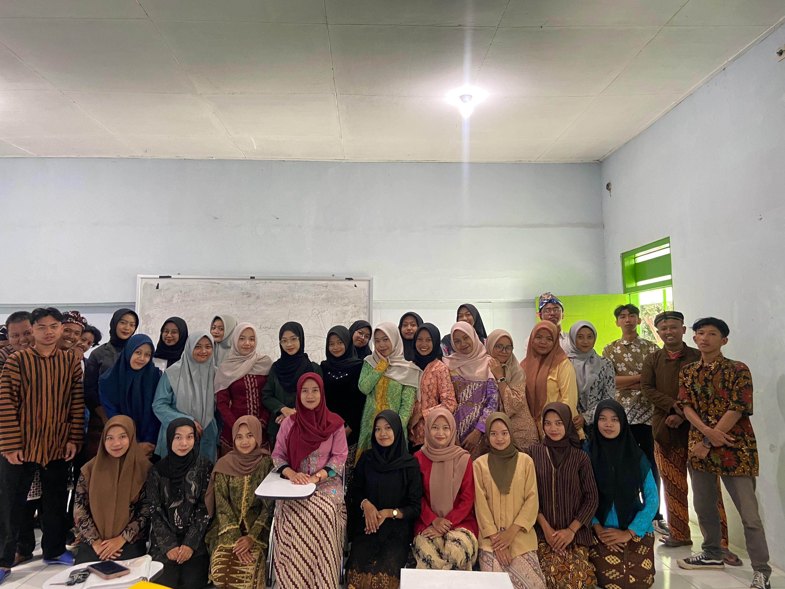

Latar Belakang
Kelas A24 adalah kelas elit dengan intelektual tertinggi Angkatan 2024. Dengan kerjasama yang kuat antara Dewan Perwakilan Mahasiswa atau DPM, kelas ini menjadi kelas favorit para dosen Universitas Nahdlatul Ulama Blitar
Last updated 9 Mei 2025
Republik A24
Dalam membentuk suatu kelas yang aman dan kondusif, diperlukan sistem pemerintahan didalamnya. Kelas A24 memilki ciri khas dalam bergotong royong. Kerjasama sudah menjadi salah satu kebiasaan kelas ini. Maka dari itu pemerintahan yang ada di kelas ini menggunakan sistem pemerintahan demokrasi, dengan mahasiswa sebagai pemegang kekuasaan tertinggi untuk memilih ketua dan dewan masiswa sebagai wakilnya.
Last updated 9 Mei 2025